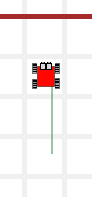
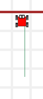
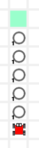
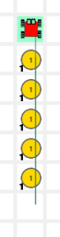
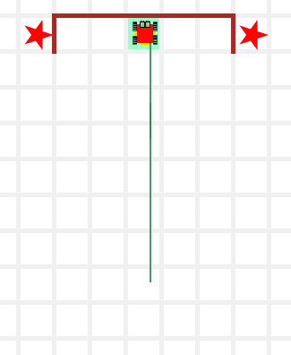
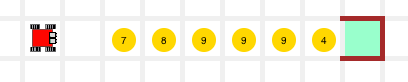
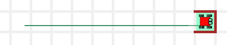
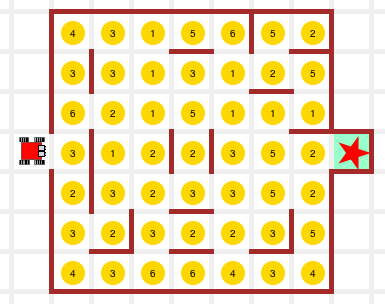
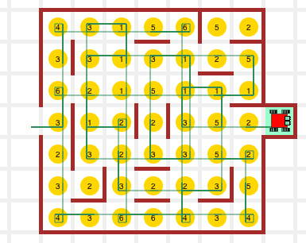

프로그래밍과 문제해결
While 루프
“계속 헤엄처라… 계속 헤엄처라…”
“Just keep swimming.. just keep swimming.”
— Dory
While 루프
While 루프 해답: 보여주기
while 루프를 갖는 해답은 짧고, 명료하고, 반복 사이클을 낭비하지 않고, 메모리도 낭비하지 않는다: 목적이 달성되자마자 바로 종료한다.
# while 루프를 사용한 해답
def face_north():
while not is_facing_north():
left()재귀와 while 루프는 동일한 작업을 수행한다; 둘은 다른 방식으로 작업을 처리한다. 재귀를 사용해서 문제를 해결하면 재귀적(recursive)이라고 하고; 루프를 사용해서 문제를 해결하면 반복적(iterative)이라고 한다.
반복적 해법이 재귀적 해법보다 우아하지는 않다. 하지만, 반복적인 해법이 재귀적인 해법처럼 함수 사본 다수가 필요하지 않아서, 보통 더 빠르고, 메모리 측면에서 항상 더 경제성이 있다.
훈련 임무
TM1. 벽으로 다가서기 (go_to_wall())
go_to_wall() 반복함수를 작성해서 카렐을 벽앞으로 이동시킨다.
| steps = 0 | steps = 1 | steps = 2 | steps = 3 |
|---|---|---|---|
 |
 |
 |  |
해답: 보여주기
코드는 다음과 같다. 무척 쉽다:
def go_to_wall():
while front_is_clear(): # 조건을 시험한다.
move() # 문제를 줄여간다
# 메인 프로그램
go_to_wall()3학년 - 길 닦기
while 루프를 사용해서 카렐 집 앞에 보도블록을 5개 놓는다.
해답: 보여주기
| 출발준비! | 작업완료! |
|---|---|
|  |  |
4학년 - 한걸음 한걸음 센다.
while 루프를 사용하는 프로그램을 작성해서 카렐로 하여금 터치다운 득점하게 한다. 즉, 경로에 나온 첫번째 볼을 잡고 나서, 엔드존까지 달려간다.
해답: 보여주기
| 시작전: 출발준비! | … 득점 후 |
|---|---|
 |
 |
5학년 - 딸기 - 파종한 것 수확하기

여름이다. 딸기나무가 열매를 맺기 시작한다. 달콤… 집에 가는 길에 카렐 앞에서 찾을 수 있는 모든 딸기를 수확한다…
해답: 보여주기
| 딸기 수확 준비 끝 | 참 맛있어요 |
|---|---|
|  |  |
6 학년 - 파멸의 방 - 스핑크스 배꼽
여기에 사용되는 전략은 다음과 같다. 방에 있는 모든 셀은 1에서 6까지 토큰이 쌓여 있다. 카렐은 토큰갯수를 센다; 만약 결과가 다음과 같다면…
- … 짝수(즉, 2,4,6)면, 우회전 한다.
- … 홀수(즉, 1,3,5)면, 좌회전 한다.
그리고 나면, 다음 동전 더미까지 해당 갯수 만큼 전진힌다.
예를 들어, 카렐이 해당 셀에서 동전 더미 4개를 발견하면, 우회전 해야 하고, 다음 동전더미 셀까지 4칸 앞으로 전진힌다.
이과정을 통해 정사각형 집으로 인도하고, 별을 찾게 된다.
카렐은 빈 가방으로 출발한다. 카렐이 서 있는 셀의 동전갯수를 반환하는 함수는 제공해 준다.
해답: 보여주기
| 무서워요…. | 야호! |
|---|---|
|  |  |